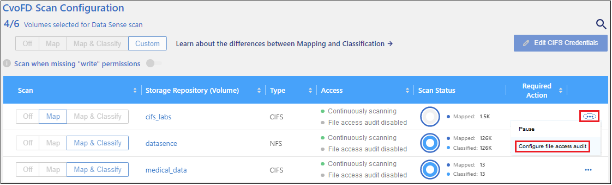
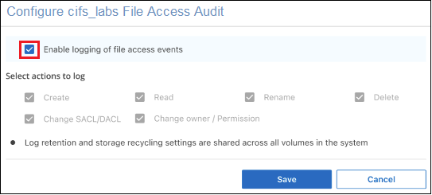
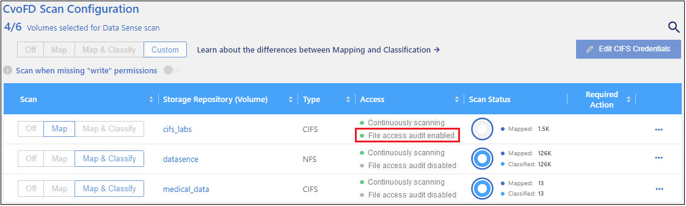
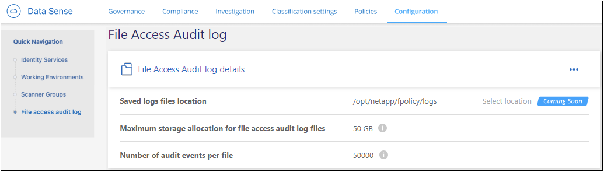

Release notes
Release notes
Monitor and manage file access events
 Suggest changes
Suggest changes
You can configure BlueXP classification to log events to a file whenever one of the files you are scanning has been accessed or changed. Then you can view the contents of this log file (the File Access Audit Log), or download it, to see what file changes have occurred, and by whom.
For example, if you want to track when any changes are made to your sensitive personnel files or payroll files, you can enable this feature on the volumes where these files reside. Then you can view the File Access Audit Log to see if these files have been changed. If they have been changed, you'll be able to see the security identifier (SID) of the person who made the change and when the change was made.
You can enable this feature on any critical volumes in your working environments that are running ONTAP software. When enabled on a volume, file access events are tracked for all files and directories in the volume. This capability is based on the FPolicy feature from your ONTAP systems, and it uses your BlueXP classification system as an FPolicy server to receive notification messages (events) from ONTAP. BlueXP classification can process approximately 990 events per second from ONTAP.

|
The December 2023 (version 1.26.6) release temporarily removed the option to activate audit log collection. |
BlueXP classification currently captures events for the following actions on your files and directories:
-
Create
-
Read
-
Write
-
Rename
-
Delete
-
Change owner/permissions
-
Change SACL/DACL (access control list (ACL) changes)
BlueXP users with the "Account Admin" or "Workspace Admin" roles can configure volumes for file access audit logging and can view and download the audit logs. Users with the "Compliance Viewer" role can only view and download the audit logs.
Supported data sources
BlueXP classification can log file access events for files that reside on ONTAP volumes in the following data sources:
-
On-premises ONTAP
-
Cloud Volumes ONTAP
-
Amazon FSx for NetApp ONTAP
The data sources must be running ONTAP version 9.11 or greater software.
Configure volumes for file access audit logging
You can enable file access audit logging on individual volumes to track changes to files and directories.

|
You can configure file access auditing on a maximum of 8 volumes on each data source at this time. |
-
You should have Active Directory configured for the data sources so that BlueXP classification can list the ID of the person who accessed the files.
-
Port 5018 must be open for outbound access from the BlueXP classification system.
-
From the Scan Configuration page for the data source, click
 for the volume and select Configure File Access Audit.
for the volume and select Configure File Access Audit.
-
In the Configure File Access Audit dialog, click the checkbox for Enable logging of file access events and click Save.
Note at this time that all the potential logging actions are selected by default — they are not editable.

-
You'll see that file access auditing is now enabled for that volume.

Any file access events that are generated for files on the enabled volumes will be added to the log file. Check the log file occasionally to see they types of events you are receiving.
Log file contents
A log file is created for every volume that you have configured to track file access events. The log files are named "<volume_name>_<volume_uuid>_.log"; for example "fpolicy_cifs_838c1727-dd2d-11ed-a3ec-590ce4991.log". Each line in the audit log contains information in this format:
-
Timestamp - date and time of the event
-
Client IP - IP address of the instance/PC/Proxy in which the file operation was performed
-
Volume Name - name of the volume
-
Volume UUID - UUID of the volume
-
File Type - type of file: FILE or DIR
-
File Size - size of file in bytes
-
Path - full path and name of the affected file or directory
-
Volume Type - type of volume: SMB or NFS
-
User ID - security identifier (SID) of the person who performed the action
-
File Owner ID - security identifier (SID) of the file owner
-
Event Type - Create, Read, Write, Rename, Delete, Change owner/permissions, or Change SACL/DACL
-
Action Details - what was done: depends on the action
For example, the following line from the log file shows that a "Create" action has occurred in the volume "fpolicy_cifs" - a new file "f14" has been created in the volume.
{"Timestamp": "2023-04-24 13:57", "Client_IP": "172.31.14.35", "Volume_Name": "fpolicy_cifs", "Volume_UUID": "838c1727-dd2d-11ed-a3ec-590ce4991", "File_Type": "FILE", "File_Size": 100, "Path": \\FPOLICY_CVO\fpolicy_cifs_share\dbs\f14, "Volume_Type": "SMB", "User_ID": "S-1-5-21-459977447-2546672318-3630509715-500", "File_Owner_ID": "S-1-5-32-544", "Event_Type": "CREATE", "Action_Details": {details}}
You can use the BlueXP classification Investigation page to search for the volume (using the "Storage Repository" filter) or file (using the "File / Directory Path" filter) to see more details about the affected volume and file.
Access the File Access Audit Log files
The File Access Audit Log files are located on the BlueXP classification machine in: /opt/netapp/fpolicy/logs
Each file is configured by default to contain a maximum of 50,000 events. You can customize this value in the File Access Audit Log Configuration page. After this maximum has been reached, older entries in the log file are overwritten.
The total size of all the log files in the directory is set by default to a maximum of 50 GB. You can customize this value in the File Access Audit Log Configuration page. When that limit is reached, the oldest log files are deleted as new log files are added. Additionally, any log files that are older than 14 days will be overwritten as that is the maximum retention time.
When BlueXP classification is installed on a Linux machine on your premises, or on a Linux machine you deployed in the cloud, you can navigate directly to the log files.
When BlueXP classification is deployed in the cloud, you'll need to SSH to the BlueXP classification instance. You SSH to the system by entering the user and password, or by using the SSH key you provided during the BlueXP Connector installation. The SSH command is:
ssh -i <path_to_the_ssh_key> <machine_user>@<datasense_ip>
-
<path_to_the_ssh_key> = location of ssh authentication keys
-
<machine_user>:
-
For AWS: use the <ec2-user>
-
For Azure: use the user created for the BlueXP instance
-
For GCP: use the user created for the BlueXP instance
-
-
<datasense_ip> = IP address of the BlueXP classification virtual machine instance
Note that you'll need to modify the security group inbound rules to access the system in the cloud. For details, see:
Configure File Access Audit Log settings
There are three options that you can configure for the file access audit file logs. These settings apply to all data sources that have configured file access audit logging on this BlueXP classification instance. You configure these settings from the File Access Audit Log section of the BlueXP classification Configuration page.

| Audit Log Option | Description |
|---|---|
Log file location |
The location is currently hardcoded to write the log files to |
Maximum storage allocation for audit logs |
The total size of all the log files in the directory is currently hardcoded to a default value of 50 GB. When that limit is reached, the oldest log files are deleted automatically. |
Maximum number of audit events per audit file |
Each file is currently hardcoded to contain a maximum of 50,000 events. After this maximum has been reached, old events are deleted as new events are added. |
Note that these settings are currently hardcoded to default settings. They can't be changed.